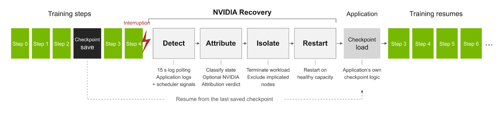

一次故障会留下多处症状
分布式训练里，一个节点异常可能让其他进程一起等待，最后到处出现通信错误。运维人员要沿日志回查最早异常，再决定是否重试、换节点或停止。Attribution把同一次执行的日志、指标与调度上下文汇总，用规则形成包含相关节点与证据的诊断。它不是让语言模型自由猜根因。把伴随症状和归因结果一起保留，对人工复核很重要：被指出的节点应当有对应证据，而不是因为它最后报错就自动承担根因。
NVIDIA Recovery + Attribution · 开源运维工具 · 官方技术介绍

分布式训练里，一个节点异常可能让其他进程一起等待，最后到处出现通信错误。运维人员要沿日志回查最早异常，再决定是否重试、换节点或停止。Attribution把同一次执行的日志、指标与调度上下文汇总，用规则形成包含相关节点与证据的诊断。它不是让语言模型自由猜根因。把伴随症状和归因结果一起保留，对人工复核很重要：被指出的节点应当有对应证据，而不是因为它最后报错就自动承担根因。
Recovery将判断保存为可检查的建议，再交由调度集成执行。新部署的监控模式先发布建议而不采取调度动作，便于团队对照既有人工作业方式。这个顺序让误报可以先在观察阶段暴露。需要复核的不只是重启次数，还包括是否排除了正确节点、同一个异常是否被反复处理，以及恢复后的训练是否前进。对任务负责人而言，页面若只显示重启成功，很容易掩盖检查点未加载或工作仍然卡住的情况。
当前仓库明确称项目为实验性、尚不适合生产，支持Slurm或通过Slinky运行的Slurm，原生Kubernetes恢复还没有实现。它提供源码和Helm配置，镜像需要运维自行构建；检查点存储和硬件修复也不由它负责。另一个不能省略的差异是，技术博客称Attribution开源，但Recovery说明其源码尚未能公开获取，本地示例因此关闭该依赖。可以研究恢复循环，并不等于任何读者已经能完整复制厂商的运行环境。
适合先试的是可丢弃的小集群和已知故障样本，记录人工判断、系统建议以及重新出现有效训练进度的时间。还应准备错误检查点、重复告警和持续无进展的情况，确认策略会停下来交还人工。博客给出的动作延迟不等于完整恢复时间，本次也未复现厂商数据。替代方案仍包括调度器重试与值班手册；比较时要把误重启造成的计算浪费和排查时间一起计算。若建议需要频繁修正，监控模式本身可能仍有用，却不足以支持自动处置。